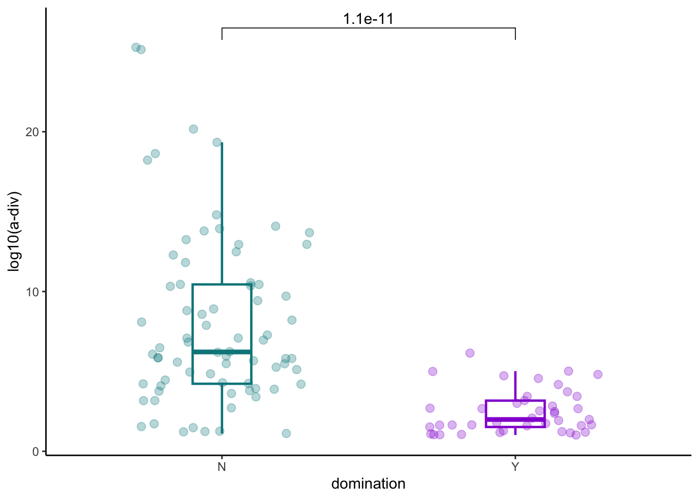
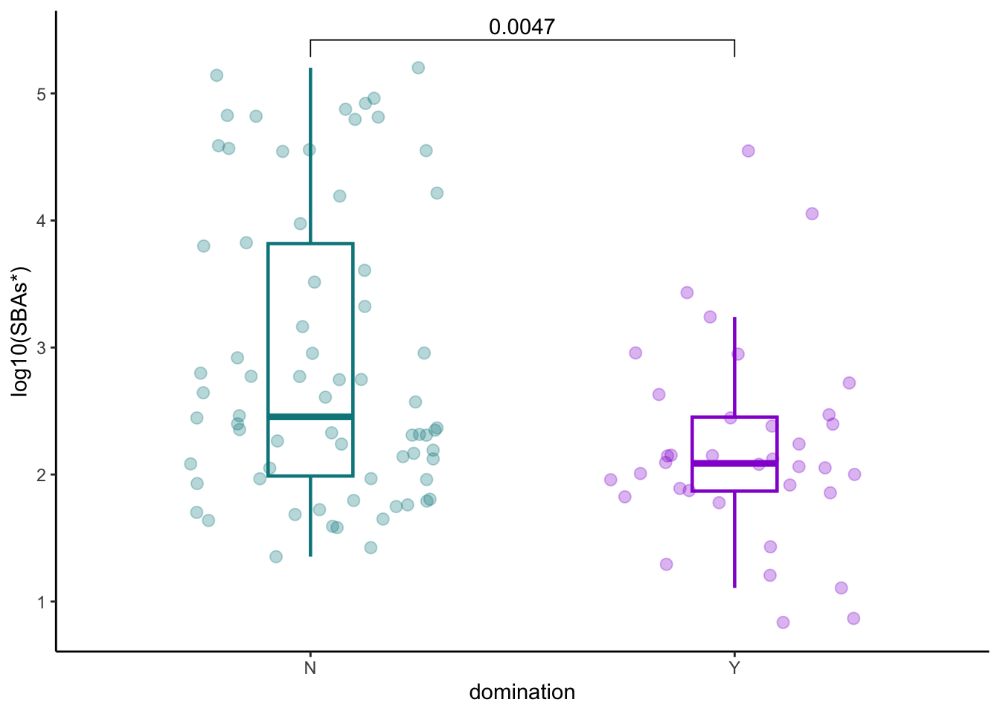

Chapter 7 Diversity, bai operon and domination
7.1 Evaluate correlation of a-diversity and bai operon sum
data_ba<- asv_alpha_all %>%
inner_join(bai_genes_clean %>% distinct(sampleid, bai_operon_sum)) %>%
left_join(cohort_BAS) %>%
filter(ursodiol=="Y")
data_ba %>%
ggplot(aes(x=log10(simpson_reciprocal), y=log10(bai_operon_sum+0.01)))+
geom_point(alpha=0.6)+
stat_cor(method="pearson")+
geom_smooth(method="lm")+
theme_classic()+
ylab("bai operon log10(cpm)")+
xlab("a-diversity")7.2 Identify patients with monodomination by 16S
#create dataset with asv
samples_asv<-cohort_BAS %>%
filter(later=="Y") %>%
select(sampleid) %>%
inner_join(counts_samples %>%
select(sampleid, asv_key, count, count_total)) %>%
inner_join(asv_annotation_blast_ag %>%
select(asv_key, kingdom, phylum, class, ordr, family, genus)) %>%
mutate(relab=count/count_total) %>%
group_by(sampleid, genus)
pathogens_pre<- samples_asv %>%
filter(genus=="Enterococcus"|genus=="Streptococcus"|phylum=="Proteobacteria") %>%
mutate(enterococcus=ifelse(genus=="Enterococcus", relab, 0)) %>%
mutate(streptococcus=ifelse(genus=="Streptococcus", relab, 0)) %>%
mutate(proteobacteria=ifelse(phylum=="Proteobacteria", relab, 0)) %>%
mutate(enterococcus_dom=ifelse(enterococcus>=0.3, "Y", "N")) %>%
mutate(streptococcus_dom=ifelse(streptococcus>=0.3, "Y", "N")) %>%
mutate(proteobacteria_dom=ifelse(proteobacteria>=0.3, "Y", "N")) %>%
mutate(any_dom=ifelse(enterococcus_dom=="Y"|streptococcus_dom=="Y"|proteobacteria_dom=="Y", "Y", "N")) %>%
group_by(sampleid) %>%
arrange(desc(any_dom)) %>% slice(1)7.3 Domination and a-diversity
pathogens_pre %>% inner_join(asv_alpha_all) %>%
ggplot(aes(x=any_dom, y=simpson_reciprocal, color=any_dom))+
geom_boxplot(width=0.2, lwd=0.8, outlier.shape = NA) +
geom_jitter(width=0.3, alpha=0.3, size=2.5)+
ylab("log10(a-div)")+
xlab("domination")+
theme_classic()+
stat_compare_means(comparisons=list(c("Y", "N")),
method="wilcox.test",
correct=FALSE)+
scale_color_manual(values=c("turquoise4","darkviolet"))+
theme(legend.position="none")
7.4 Domination and bai operon
pathogens_pre %>% inner_join(bai_genes_clean %>% distinct(sampleid, bai_operon_sum)) %>%
ggplot(aes(x=any_dom, y=log10(bai_operon_sum+0.01), color=any_dom))+
geom_boxplot(width=0.2, lwd=0.8, outlier.shape = NA) +
geom_jitter(width=0.3, alpha=0.3, size=2.5)+
ylab("log10(bai sum)")+
xlab("domination")+
theme_classic()+
stat_compare_means(comparisons=list(c("Y", "N")),
method="wilcox.test",
correct=FALSE)+
scale_color_manual(values=c("turquoise4","darkviolet"))+
theme(legend.position="none")
7.5 SBAs and domination
pathogens_pre %>% inner_join(later_pools_final) %>%
ggplot(aes(x=any_dom, y=log10(secondary_nonUDCA), color=any_dom))+
geom_boxplot(width=0.2, lwd=0.8, outlier.shape = NA) +
geom_jitter(width=0.3, alpha=0.3, size=2.5)+
ylab("log10(SBAs*)")+
xlab("domination")+
theme_classic()+
stat_compare_means(comparisons=list(c("Y", "N")),
method="wilcox.test",
correct=FALSE)+
scale_color_manual(values=c("turquoise4","darkviolet"))+
theme(legend.position="none")